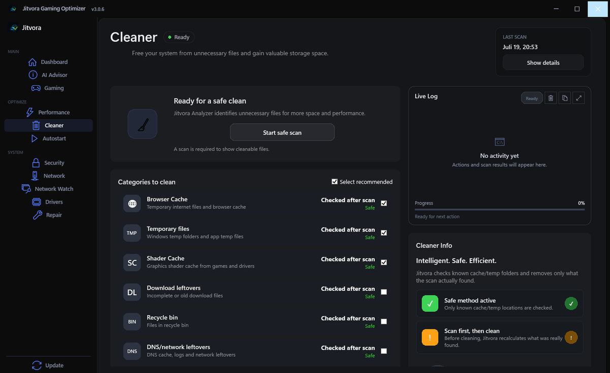
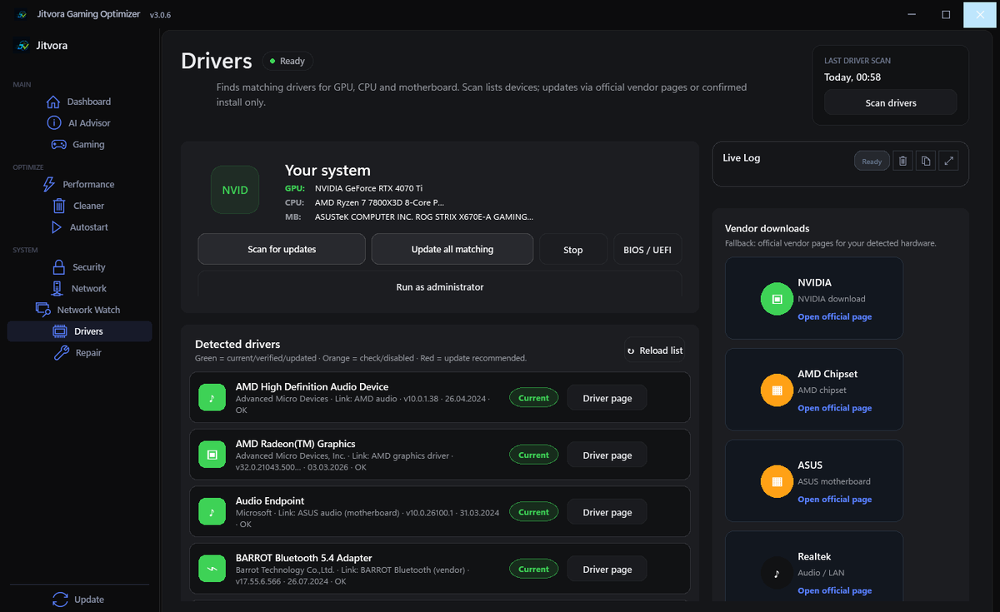
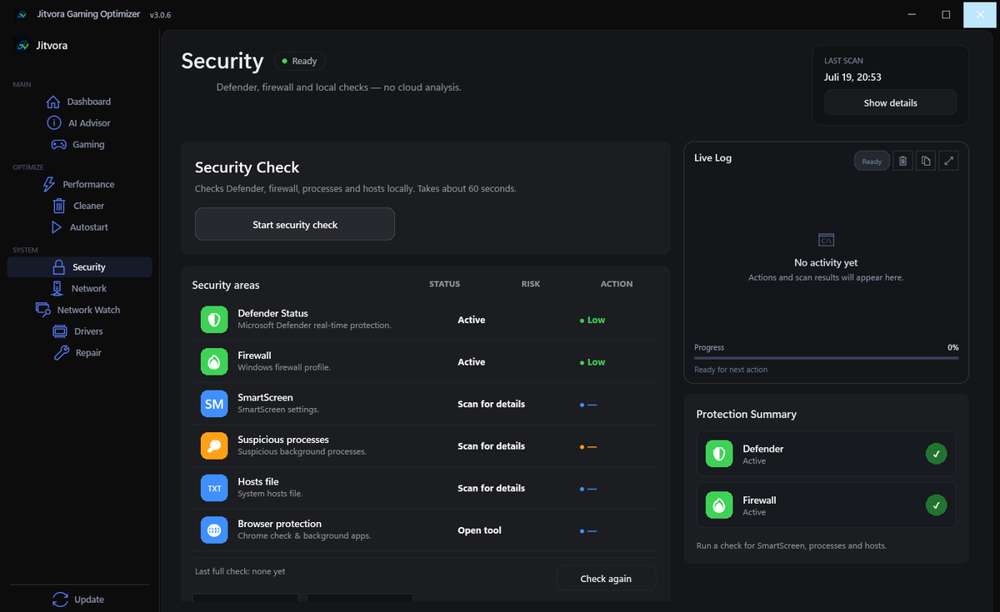

What Jitvora does not do
- No game files are modified
- No injection into running games
- No hooking of game processes
- No anti-cheat bypass of any kind
- No account and no upload of your system data
Windows 10/11 · 64-bit · Free
Configure Windows gaming settings, clear out temporary files, check drivers and diagnose your connection — safely from one desktop app.
SHA256 checksum · {version}
4673cd94…a786e5
Trust & SHA256
Illustration of the app layout — not a live screenshot.
Features
Seven core tools. One app. Plus Pro Center with additional tools.
Game Mode, power plan and safe Windows tweaks for gaming.
Remove temporary files and cache with size preview first.
Scan hardware and open official vendor download pages.
Points to Wi-Fi, router or route — and says “not measurable” when a value cannot be trusted.
Adapter info, gaming profile for the LAN adapter, DNS flush and ping checks in one place.
Quick security overview and system status at a glance.
Shortcuts to SFC, DISM and common Windows repair actions.
Review before apply — no automatic changes without confirmation.
Preview
Real screenshots from the application — a calm interface, clear structure, native to Windows.






Swipe sideways to explore
App screenshots from version 3.0.6 · current download: {version}. The window continues below the visible crop.
Network Watch
Live ping, jitter and packet loss during your game — with a clear diagnosis instead of guesswork.
Example Example values for illustration. This page measures nothing — measurements happen only in the app on your PC.
Measured via ICMP, the game log, or UDP flow timing. The app shows which method was used and how confident the server detection is.
How it works
Scan, review, apply — you stay in control.
Get the installer from the official GitHub release.
Check your system, hardware and gaming-relevant settings.
See the recommendations before anything changes.
Safe fixes are applied only after your confirmation.
Trust
Official GitHub releases, a published SHA256 checksum and fully local processing.
Download from GitHub — not third-party sites.
Updates require your approval in the app.
Runs locally on your PC. No login needed.
Recommendations before changes where possible.
Windows settings only — anti-cheat friendly approach.
Applied tweaks are logged and can be undone one at a time — after a confirmation prompt. For anything else the app can create a Windows restore point beforehand.
4673cd947af83ad90df570debdd19a0f020e2e0610d0b6c045fc401533a786e5
Verify via the Trust page or trust-latest.json.
What's new
v3.0.7 current
The latest release focuses entirely on the interface — the tools and their safe behavior are unchanged.
FAQ
Yes — the full version is free on 64-bit Windows 10 and 11. No license key for {version}.
No game files are modified — Jitvora adjusts Windows settings only.
{version} is not code-signed yet, so SmartScreen can warn about an unknown publisher. Compare the published SHA256 checksum with your download before installing.
Run Get-FileHash .\{file} -Algorithm SHA256 in PowerShell and compare the result with the checksum on the Trust page.
No. Real game ping is shown only when a valid game-server connection is detected. Otherwise the value is labelled as a diagnostic measurement — or as not measurable.
No. The installer runs without administrator by default, and the dashboard, tips and scans work without it. Repair actions such as SFC, DISM or a Winsock reset need elevation — see Permissions.
Manual only — check the in-app Update page or GitHub. You confirm before installing.
Only from official GitHub Releases or this website. Avoid third-party download sites.
Yes — German and English are supported in the app settings. This website is available in many languages.
Download
Free for Windows 10 and 11 (64-bit). Official GitHub release with published SHA256 checksum.
Verify your download: Trust & SHA256 · trust-latest.json
No account required · Manual updates only · Uninstall anytime
No matching command.